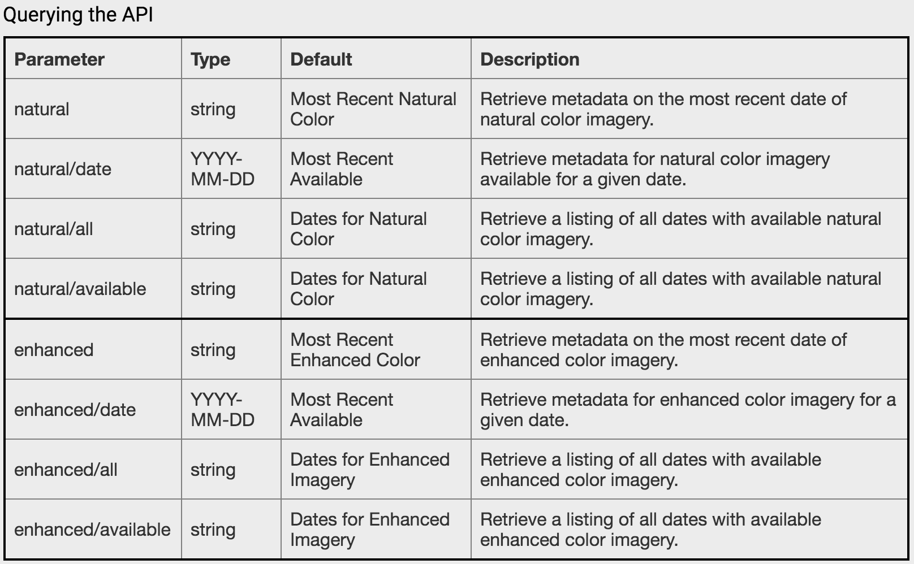
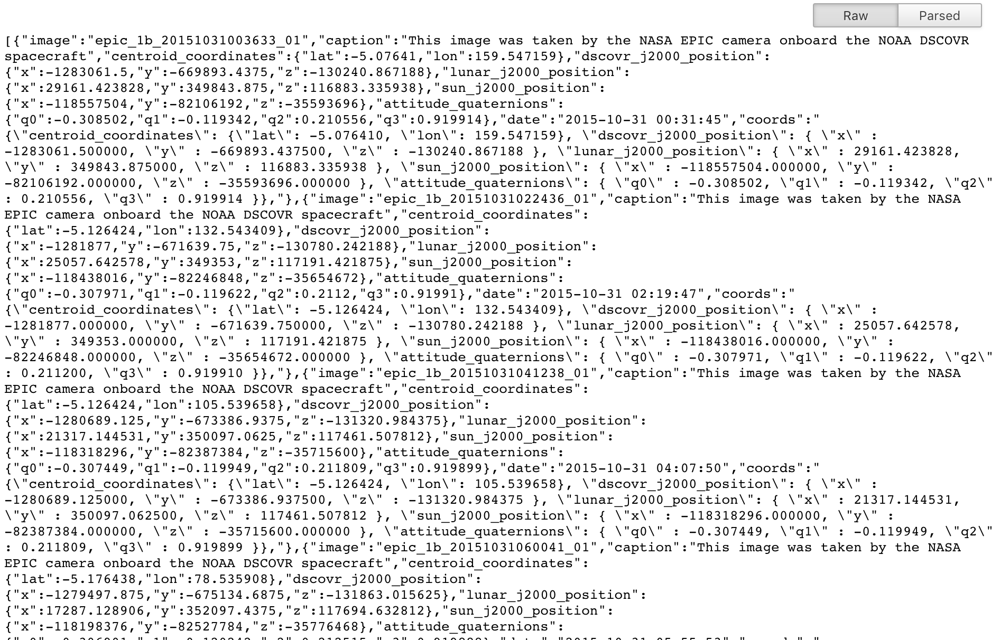
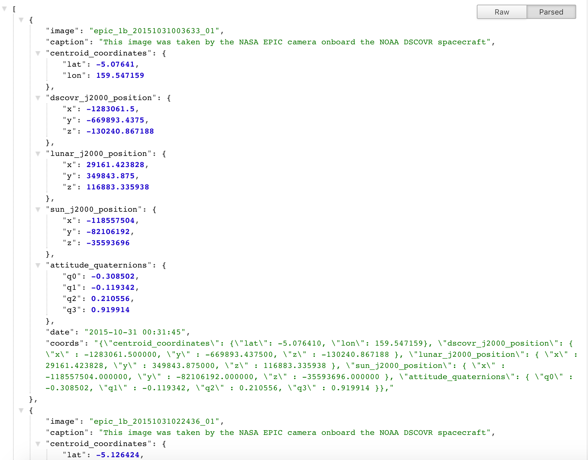
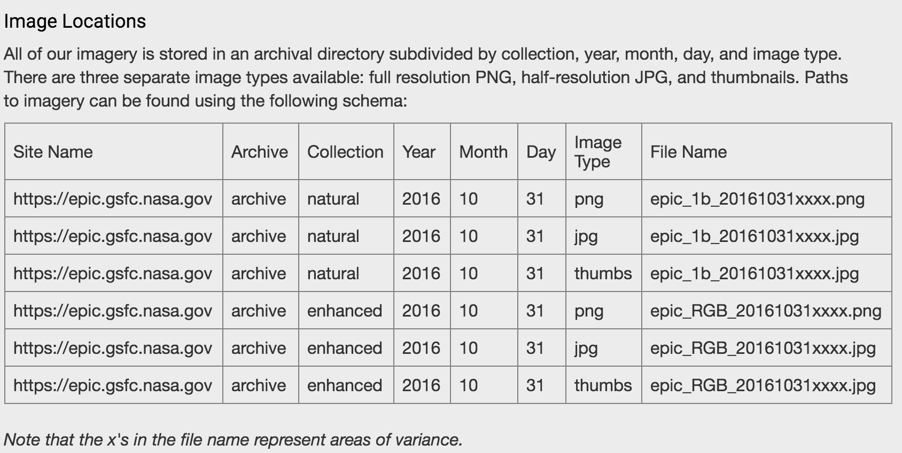

Earth Polychromatic Imaging Camera

What is EPIC API?
The Earth Polychromatic Imaging Camera (EPIC) API provides stunning images of the Earth captured by DSCOVR, a deep-space satellite uniquely positioned at the Earth-Sun Lagrange point. Like APOD, this API allows us to get full disc imagery of the Earth as well as information regarding the images.
Interacting with EPIC API
Similar to APOD, the EPIC API allows us to send a request to NASA server to get full-disc images of the Earth on our given date if they are available. The server will then respond to our request with a JSON object. The difference with this API is that it doesn't provide a direct URL to the image like the APOD API did. Instead, it replies with a JSON object that contains an array of objects, which store the details of the images (the name of the image, date and time it was taken, and coordinates of the Earth, Sun and the camera capsule). For a more detailed explanation of how to use the API, please visit the official document here.
As we have already covered the basics in the APOD API page, let's discuss some small additional things that are required to make use of the EPIC API here. The NASA servers store two sets of EPIC images: natural and enhanced. The way we submit queries to the API is very similar between the two as you can see in the table below. So beside the date, we will need to allow the users to select between the two options on our website.
Another interesting feature of this API is we don't even need to include an API key in our request. The request parameters will already be included in the URL. For example, if we need to look for enhanced EPIC images on 2017-01-01, our request to the server will be as below
https://epic.gsfc.nasa.gov/api/enhanced/date/2017-01-01
Then the server will process our request and return the below JSON object.
As you can see, the JSON object is much more cryptic this time. Lucky for us, we have a handy plug-in JSON Formatter. After using the formatter, things look much more legible as below. 
There is much more information associated with each images now. However, as mentioned before, the URL link to the image is not readily availbable. Thus we will need to create our own URL to access and display the image on our website. The URl for each images can be created using the guideline provided by the API documentation as below.
Now that we have discussed the differences and the addition steps we need to add in order to show the images, let's look at the Javascript and HTML code to accomplish that!
Explanation
Once we have received the object, it is time we used our Javascript to parse the details in the object and display it to our website. Below you will find the Javascript and HTML code for our site and we will go into details right below it. Note that the Result tab will not actually work in our JSFiddle below due to request restrictions but it gives you a sense of what our page will look like. A fully interactive demo page can be found on the next page when we are done. But if you are interested in seeing what the API is for, you can see NASA's site that makes use of their EPIC API here.
As you can see in the HTML, we have added the drop-down menu for the user to choose what type of image (natural/enhanced) they would like to see. Once they fill the date out, select the image type and click the 'Show me the picture!' button, our Javascript will make a request to the server accordingly. We will focus on the steps that are different from what we have seen in the APOD API. Let's look at the below portion of our Javascript.
document.addEventListener('DOMContentLoaded', bindButtons);
function bindButtons() {
var year, month, date, imageType;
document.getElementById('submitButton').addEventListener('click', function(event){
var req = new XMLHttpRequest();
var url = "https://epic.gsfc.nasa.gov/api/";
imageType = document.getElementById("image_type").value;
url += imageType + "/";
var desiredDate = document.getElementById("searchDate").value;
if (desiredDate != '') {
url += "date/" + desiredDate;
year = desiredDate.substring(0, 4);
month = desiredDate.substring(5, 7);
date = desiredDate.substring(8, 10);
}
console.log(url);
req.open("GET", url, true);
First of all, since we need to create our own URL to access the images based on its type and date, we need to create variables to keep track of those details. When the user inputs the string for their desired date, we will parse the string and keep the year, month, and date in the respective variables. Also, the image type is kept track of by the imageType variable.
Next, in order to receive JSON object, we need to submit our request with the specified image type and date in the following format
https://epic.gsfc.nasa.gov/api/IMAGETYPE/date/YYYY-MM-DD
For example, if we would like a natural image for 2017-01-01, then our request would be the following.
https://epic.gsfc.nasa.gov/api/natural/date/2017-01-01
Next, we need to get the image name which is the last part of the image URL we will need. As mentioned above, the JSON object returned by the server contains an array of smaller ojects, each of which contains details like name, date and time, and other information associated with the image. Unlike APOD, images may not be available for a given date and image type combination, in which case we would receive an empty array. Therefore, we need to check for such cases first in the following portion of our Javascript
req.addEventListener('load', function() {
if (req.status >= 200 && req.status < 400) {
var response = JSON.parse(req.responseText);
if (!response.length) {
document.getElementById('result').textContent = "Unfortunately there is no images available on the selected day. Please select another day!";
// reset the elements
document.getElementById('pic').src = "images/pic11.jpg";
document.getElementById('caption').textContent = "";
document.getElementById('date').textContent = "";
} else {
var dateURL = year + "/" + month + "/" + date;
var picUrl = "https://epic.gsfc.nasa.gov/archive/" + imageType + "/" + dateURL + "/png/" + response[0].image + ".png";
document.getElementById('result').textContent = "There are " + response.length + " images available. Showing only the first image!";
document.getElementById('caption').textContent = response[0].caption;
document.getElementById('date').textContent = response[0].date;
document.getElementById('pic').src = picUrl;
console.log(response);
}
} else {
console.log("Error in network request: " + req.statusText);
}
});
When the array is empty (length is 0), then it will print a message to the Result line on our page as well as reseting the image, caption, and date in case it has showned other images before.
When the array is not empty, the Result line will tell how many images are available for the given image type and date combination. It will also display the first image available in the array and its caption and date and time. The rest of our Javascript is pretty much the same with what we have seen in our APOD tutorial.
By now, hopefully you have got a better understanding of how to make request to the EPIC API and process the server response in order to display the details to our end-users. Next page, you will see a fully-functional demo of what we have discussed so far for the EPIC API!